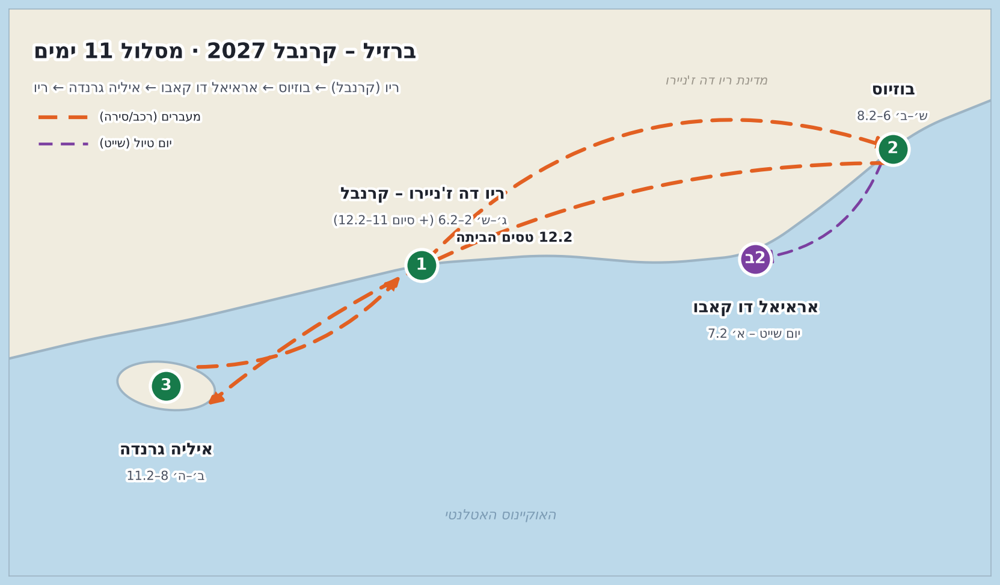

2–12.2.2027 · ריו בקרנבל ← בוזיוס ואראיאל דו קאבו ← איליה גרנדה ← ריו וטיסה הביתה

לחצו על תחנה כדי להתמקד בה במפת Google, או על "🗺️ הצג במפה" ליד כל מקום ברשימה למטה.
➔ ✈️ נחיתה בריו (GIG) ביום ג׳ 2.2. לינה באזור איפנמה / קופקבנה. להזמין לינה וכרטיסי סמבודרום חודשים מראש – מחירי קרנבל!
נחיתה ביום ג׳ 2.2.
הסלע בין איפנמה לקופקבנה – השקיעה הראשונה של הטיול + קאיפיריניה.
מוטו-טקסי לראש פאבלת וידיגל + כ-40 דק׳ הליכה לתצפית הכי שווה בריו. בוקר ד׳ 3.2.
חוף נסתר בין צוקים בשכונת ז׳ואטינגה – מגיעים בשביל ירידה קצר. בוקר ה׳ 4.2.
מתחם שוק ענק במרכז – נצנצים, תלבושות ואביזרים בזול. ערב ה׳ 4.2.
בסיס הלינה – פוסטו 9.
טיילת הגלים המפורסמת.
האייקונים של ריו – לשבץ בבוקר פנוי (או ביום האחרון 12.2).
ליל שישי 5.2 מ-21:00: מצעד הפתיחה של הקרנבל. כרטיסים מראש! (מצעדי-העל: ראשון–שלישי 7–9.2).
אזור המסיבות המקדימות – ערב ד׳ 3.2 מתחת לקשתות.
בלוקו שכונתי מקסים בסמטאות – פתיחת הקרנבל, שישי 5.2.
הבלוקו הוותיק והענק של ריו – שבת 6.2 בבוקר, לפני היציאה לבוזיוס.
Party Boat במפרץ גואנברה – בוקר שבת 6.2 (להזמין מראש).
מועדון סמבה איקוני על 3 קומות – לערב שלא בבלוקו.
בוטיק שקט מול חוף לבלון.
הוסטל-בוטיק ברמה גבוהה בקופקבנה.
הוסטל עם בריכה במרחק הליכה מהחוף.
➔ 🚐 שבת 6.2 אחה״צ: רכב/שאטל מריו לבוזיוס (כ-2.5–3 שעות) – יוצאים מוקדם כדי לחמוק מפקקי הקרנבל.
הרחוב הראשי של חיי הלילה – ברים, מועדונים ומסעדות.
טיילת החוף היפה של בוזיוס – פסל בריז׳יט ברדו והשקיעה.
חוף הגלישה הגדול – בוקר רגוע לפני ההמשך דרומה.
מסיבת השקיעה של בוזיוס – ערב ראשון 7.2.
יציאת השייט של ׳הקריביים של ברזיל׳ – מים טורקיז מטורפים. יום א׳ 7.2 מוקדם.
המפרצונים עם מדרגות העץ המפורסמות – החוף הכי מצולם בברזיל.
חוף שמגיעים אליו רק בשייט – חול לבן ומים שקופים.
מלון בוטיק עם תצפית על המפרץ.
הוסטל ברמה גבוהה ליד Rua das Pedras.
➔ 🚐 שני 8.2: נסיעה מבוזיוס לנמל Conceição de Jacareí (כ-4.5–5 שעות) ← 🛥️ סירה מהירה לכפר Vila do Abraão.
נקודת היציאה של הסירות המהירות לאי (כ-20 דק׳).
הכפר הראשי – בסיס הלינה, המסעדות והסירות.
מהחופים היפים בעולם – שייט + הליכה קצרה בג׳ונגל. יום ג׳ 9.2.
טרק זריחה לפסגה בגובה 982 מ׳ – יציאה 2:00 לפנות בוקר עם מדריך. ד׳ 10.2.
שנורקלינג במים טורקיז – אחה״צ של יום הזריחה.
מוזיקה חיה ומדורות על קו המים בלילה.
פוסאדת בוטיק על החוף.
הוסטל ברמה גבוהה במרכז הכפר.
➔ 🛥️ + 🚐 חמישי 11.2 אחה״צ: חזרה מאיליה גרנדה לריו.
Visconde de Pirajá – מזכרות, הוויאנס ואופנה ברזילאית.
ארוחת הבשרים החגיגית של סוף הטיול.
טיסה הביתה – שישי 12.2 בערב.